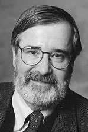
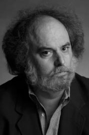
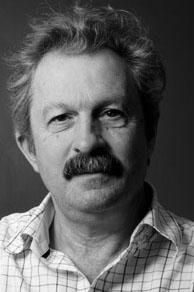

|    |
2007 год Edmund Melson Clarke, Jr. (1945), Ernest Allen Emerson (1954) и Joseph Sifakis (1946) «За их роль в развитии проверки моделей — высокоэффективную технику верификации программ, широко применяемую при разработке как программного, так и аппаратного обеспечения» |
Страна: Edmund Melson Clarke, Jr. и Ernest Allen Emerson - США, Joseph Sifakis - Греция, Франция
Образование: Edmund Melson Clarke, Jr. - Доктор философии в области информатики, Корнеллский университет, 1976
Ernest Allen Emerson - Доктор философии в области прикладной математики, Гарвардский университет, 1981
Joseph Sifakis - Доктор философии в области информатики, Университет Гренобль, 1979
О лауреатах
В 1981 году Clarke, Emerson, независимо от них, Sifakis написали работы, которые породили целую научную область проверки моделей. Их технологии верификации предоставляют алгоритмы для определения, является ли абстрактная модель, представляющая, например, проект программного, или аппаратного обеспечения, удовлетворяющей формальным спецификациям, выраженным в виде формулы темпоральной логики. Более того, если модель не обладает таким свойством, их метод идентифицирует конрпример, показывающий источник проблемы. Их работы остаются необходимой основой для успешных исследований в этой области по сей день.
Ключевые слова: Model Checking, Symbolic Model Checking, Software and Hardware Verification, Automatic Theorem Proving, Abstract Interpretation
Краткая библиография
| 1. |
Clarke, E. M., E. A. Emerson and A. P. Sistla, "Automatic verification of finite-state concurrent systems using temporal logic specifications," ACM Transactions on Programming Languages and Systems, Vol. 8, No. 2, April 1986, pp. 244–263, DOI: 10.1145/5397.5399. В статье представлен первый полный и эффективный алгоритм проверки модели. |
| 2. |
Emerson, E. Allen, and Edmund M. Clarke, “Characterizing Correctness Properties of Parallel Programs Using Fixpoints,” International Colloquium on Automata, Languages and Programming, 1980. Эта статья, предшествовала работе по проверке моделей. Она описывает Computation Tree Logic (CTL) с использованием темпоральной логики. |
| 3. |
Clarke, Edmund M. and E. Allen Emerson, “Design and Synthesis of Synchronization Skeletons Using Branching-Time Temporal Logic,” Logics of Programs, 1981. Первая алгоритмизированная процедура по проверке темпоральной логики (особенно CTL) была опубликована в этой статье, а также предложен термин «проверка модели». |
| 4. |
Sifakis, J., “A unified approach for studying the properties of transition systems,” Theoretical Computer Science, Vol. 18, 1982. В статье описываются модальности ветвящейся темпоральной логики, которые обеспечивают основу для алгоритмической проверки. |
| 5. |
Loiseaux, C., S. Graf, J. Sifakis, A. Bouajjani and S. Bensalem, “Property Preserving Abstractions for the Verification of Concurrent Systems,” Formal Methods in System Design, Volume 6, Num. 1, 1995. Здесь представлены абстракции на основе соединений Galois и их применимость к верификации параллельных систем. |